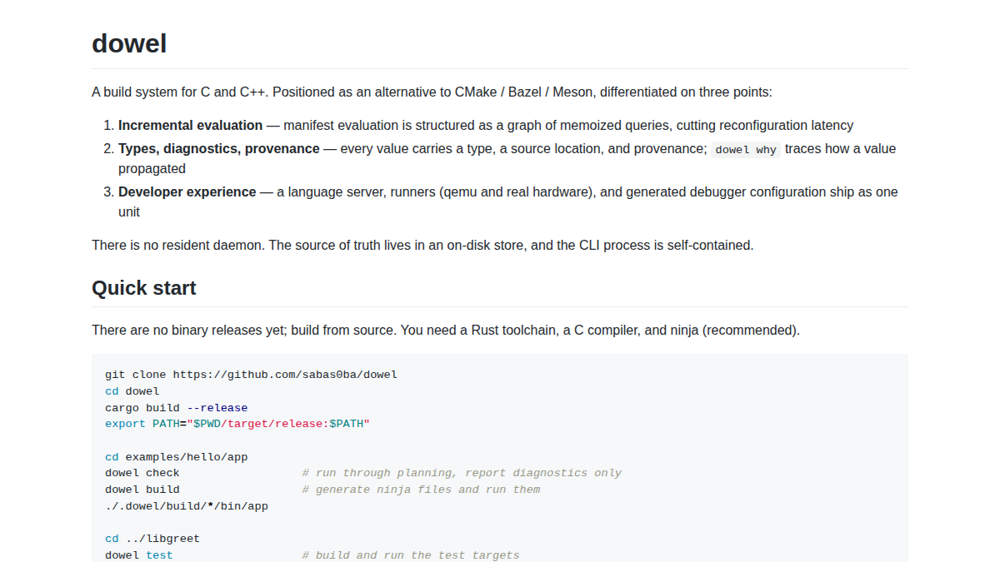
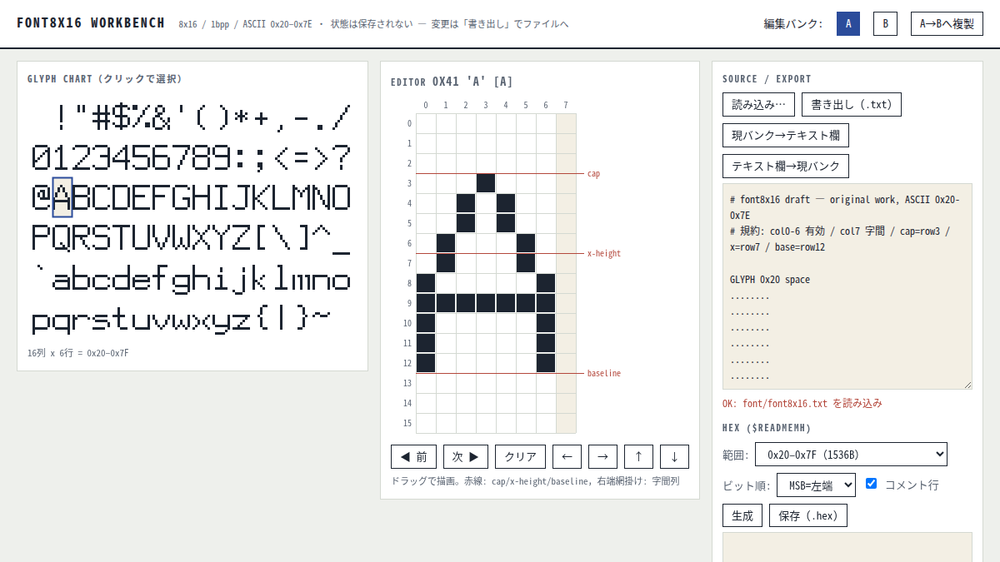
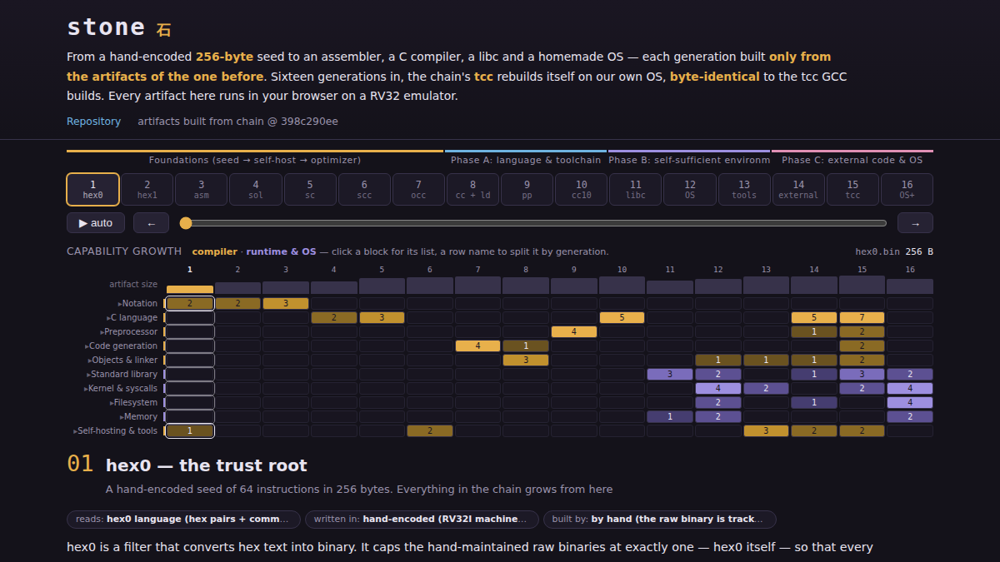
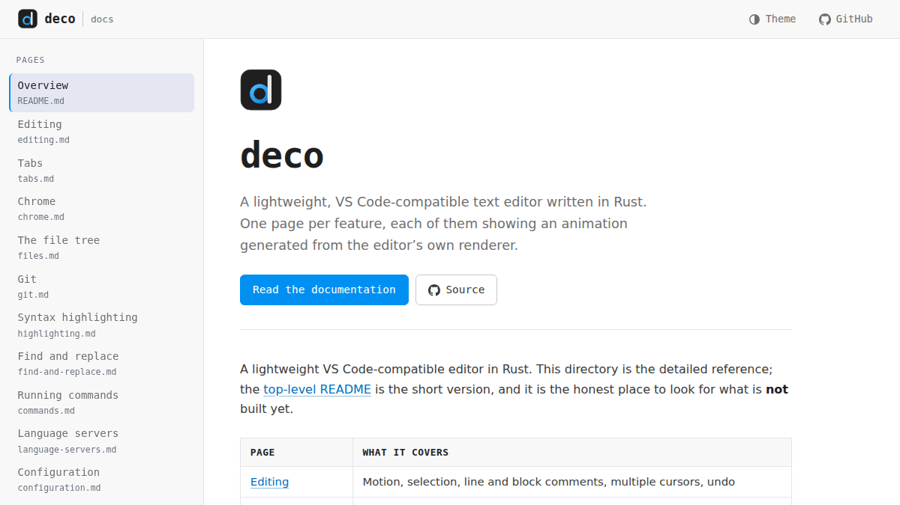
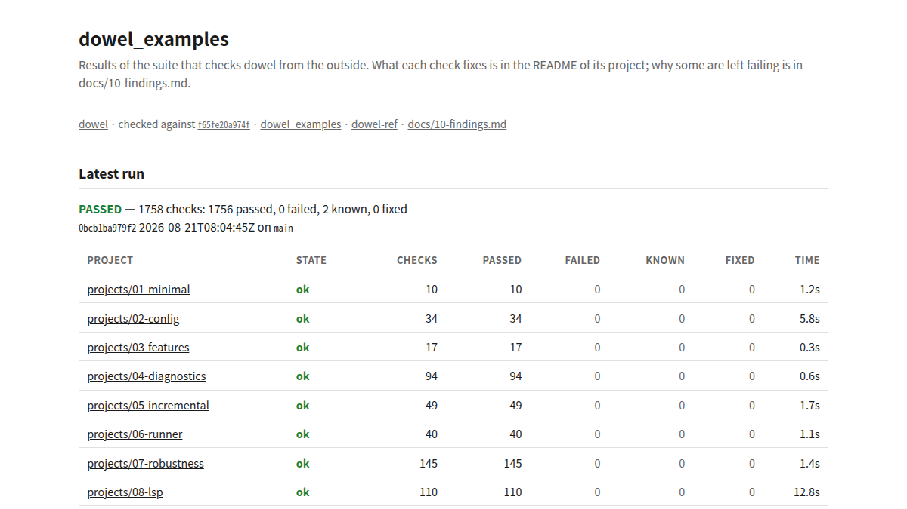
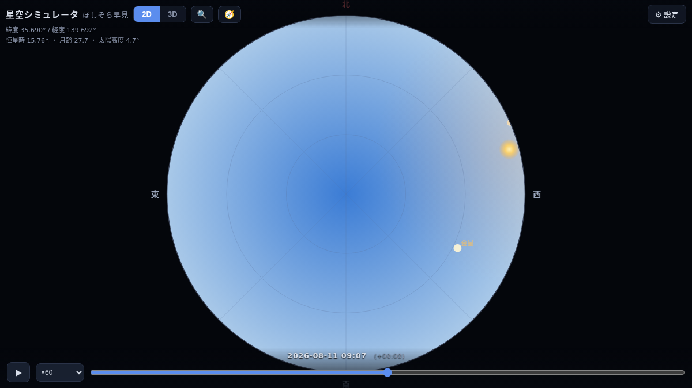
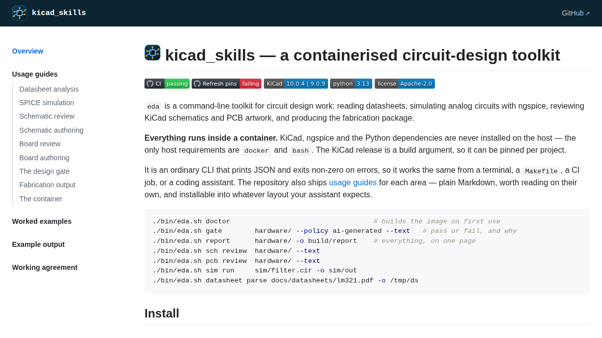
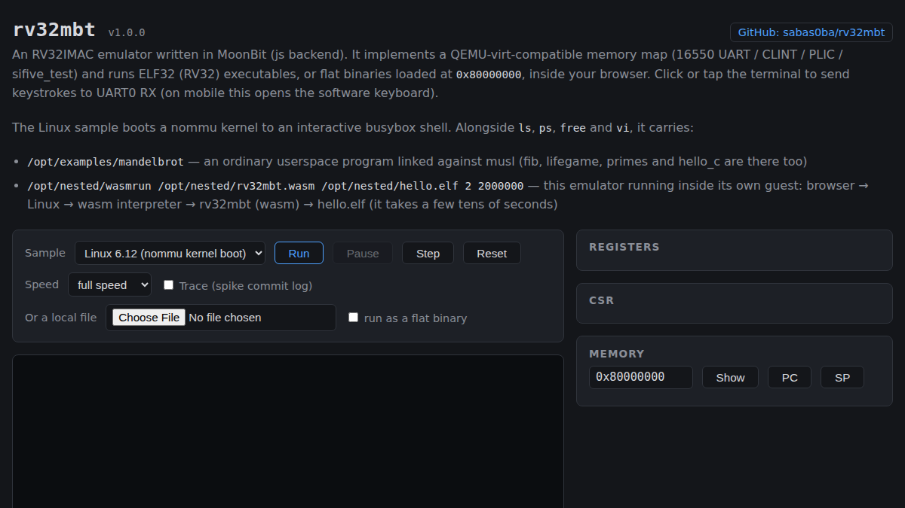
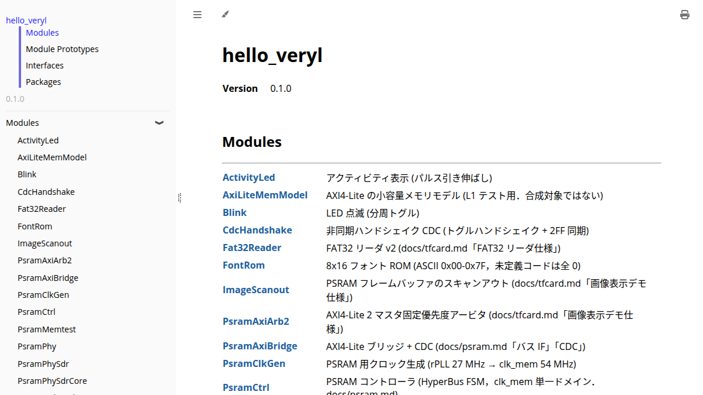
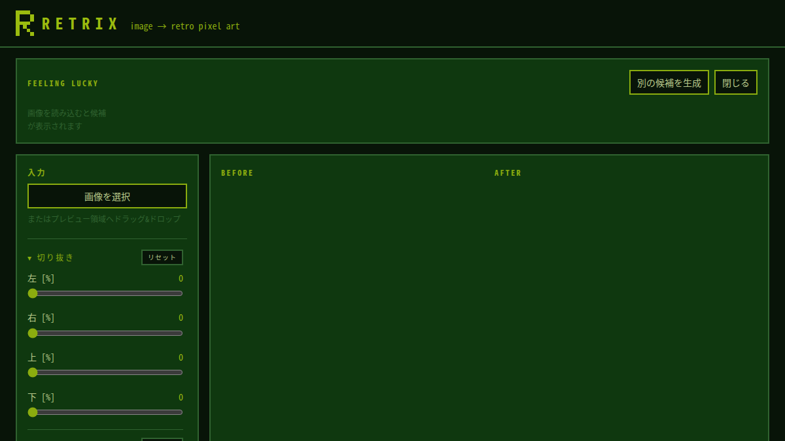

dowel
A build system for C and C++ with incremental manifest evaluation and typed values that carry provenance


A build system for C and C++ with incremental manifest evaluation and typed values that carry provenance

Single-file browser tool to edit, compare, and export 8x16 1bpp bitmap fonts as $readmemh HEX for FPGA text-mode font ROMs

Compiler bootstrap from hand-encoded RV32 binary on QEMU

A lightweight, VS Code-compatible text editor written in Rust. No Electron.

examples for sabas0ba/dowel

Night sky simulator for any date, time, and location.

Container-based toolkit for circuit design: datasheets, SPICE simulation and KiCad review

RV32IMAC emulator written in MoonBit. It boots nommu Linux 6.12.

Veryl + open-source FPGA toolchain playground for Tang Nano 9K (GW1NR-9C)

Client-side retro pixel-art image converter - zero dependencies, vanilla JS.